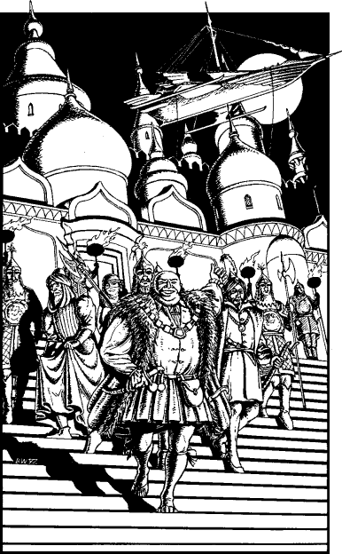

31
A signpost on the road out of Quarlen says ‘Casiorn 260 miles’. On a normal horse you would expect the journey to take four days, but on Wildwind you are confident of reaching the City of Merchants before midnight.
Aided by a full moon and your sharp Kai skills, you keep Wildwind on a safe course throughout your long night’s ride. Rapidly the miles melt away beneath his hooves and, as midnight approaches, you see the welcoming lights of Casiorn twinkling on the horizon. Using magical spyglasses, the watchful guards above the city’s west gate see you coming and set their torches to fire-beacons to help guide you. The gates of the city are thrown open and, as you ride through, you meet with a thunderous welcome from its citizens, rich and poor, many of whom have left their beds to cheer your arrival.
Not until you see the bulbous golden towers of the High-Mayor’s Palace do you allow Wildwind to slow his pace. You pass through the palace’s grand arch, crafted from marble and gold, and as you bring Wildwind to a halt you see a wondrous skyship hovering over the roof of the High-Mayor’s chambers. It reminds you of Skyrider—your friend Guildmaster Banedon’s flying ship—although the craft above is sleeker and appears to be fashioned not from wood, but from burnished metal.
‘She awaits your command,’ says High-Mayor Cordas, as he strides down the steps of his palace chambers with an entourage of guards and advisors scurrying in his wake. ‘What do you think?’ He beams, pointing to the ship. ‘Is she not magnificent?’

‘Yes, indeed she is,’ you reply, as you dismount from Wildwind who, to your greater astonishment, displays not the slightest sign of fatigue after your incredible ride from Varetta. ‘Pray tell me, High-Mayor, what is the craft’s name?’
‘We call her “Cloud-dancer”,’ he replies, proudly.
Within the hour you are standing aboard the gleaming steel deck of Cloud-dancer, which vibrates gently in tune to the rising power of its magical engines. The crew of Casiornian engineers set free the hawsers which hold her in place and then, with a farewell wave to Cordas and his court, you give the order for Cloud-dancer to commence her maiden voyage north to Holmgard.